전기공사기사 (2020-09-26 기출문제)
1과목: 전기응용 및 공사재료
1. 전기가열방식 중에서 고주파 유전가열의 응용으로 틀린 것은?
- 목재의 건조
- 비닐막 접착
- 목재의 접착
- 공구의 표면처리
(정답률: 78%)

2. 광전 소자의 구조와 동작에 대한 설명 중 틀린 것은?
- 포토트랜지스터는 모든 빛에 감응하지 않으며, 일정 파장 범위 내의 빛에 감응한다.
- 포토커플러는 전기적으로 절연되어 있지만 광학적으로 결합되어 있는 발광부와 수광부를 갖추고 있다.
- 포토사이리스터는 빛에 의해 개방된 두 단자 사이를 도통시킬 수 있어 전류의 ON-OFF 제어에 쓰인다.
- 포토다이오드는 일반적으로 포트트랜지스터에 비해 반응속도가 느리다.
(정답률: 72%)
3. 가로 30m, 세로 40m 되는 실내작업장에 광속이 2800 lm인 형광등 21개를 점등하였을 때, 이 작업장의 평균조도(lx)는 약 얼마인가? (단, 조명률은 0.4이고, 감광보상률이 1.5 이다.)
- 17
- 16
- 13
- 11
(정답률: 74%)
4. 직류 전동기의 속도제어법에서 정출력 제어에 속하는 것은?
- 계자제어
- 전압제어
- 전기자 저항제어
- 워드 레오나드 제어
(정답률: 69%)
5. 2종의 금속이나 반도체를 접합하여 열전대를 만들고 기전력을 공급하면 각 접점에서 열의 흡수, 발생이 일어나는 현상은?(문제 오류로 가답안 발표시 3번으로 발표되었지만 확정답안 발표시 2번이 정답처리 되었습니다. 여기서는 확정답안인 2번을 누르면 정답 처리 됩니다.)
- 제벡(Seebeck) 효과
- 펠티에(Peltier) 효과
- 톰슨(Thomson) 효과
- 핀치(Pinch) 효과
(정답률: 86%)
6. 풍압 500 mmAq, 풍량 0.5m3/s 인 송풍기용 전동기의 용량(kW)은 약 얼마인가? (단, 여유계수는 1.23, 팬의 효율은 0.6 이다.)
- 5
- 7
- 9
- 11
(정답률: 58%)
7. 다음 중 직접식 저항로가 아닌 것은?
- 흑연화로
- 카보런덤로
- 지로식 전기로
- 염욕로
(정답률: 73%)
8. 전기철도에서 궤도의 구성요소가 아닌 것은?
- 침목
- 레일
- 캔트
- 도상
(정답률: 77%)
9. 금속의 화학적 성질로 틀린 것은?
- 산화되기 쉽다.
- 전자를 잃기 쉽고, 양이온이 되기 쉽다.
- 이온화 경향이 클수록 환원성이 강하다.
- 산과 반응하고, 금속의 산화물은 염기성이다.
(정답률: 72%)
10. 방전개시 전압과 관계되는 법칙은?
- 스토크스의 법칙
- 페닝의 법칙
- 파센의 법칙
- 탈보트의 법칙
(정답률: 66%)
11. 케이블의 약호 중 EE의 품명은?
- 미네랄 인슈레이션 케이블
- 폴리에틸렌절연 비닐 시스케이블
- 형광방전등용 비닐전선
- 폴리에틸렌절연 폴리에틸렌 시스케이블
(정답률: 81%)
12. 변압기유로 쓰이는 절연유에 요구되는 특성이 아닌 것은?
- 점도가 클 것
- 절연내력이 클 것
- 인화점이 높을 것
- 비열이 커서 냉각 효과가 클 것
(정답률: 84%)
13. 가선 금구 중 완금에 특고압 전선의 조수가 3일 때 완금의 길이(mm)는?
- 900
- 1400
- 1800
- 2400
(정답률: 70%)
14. 콘크리트 매입 금속관 공사에 사용하는 금속관의 두께는 최소 몇 mm 이상이어야 하는가?
- 1.0
- 1.2
- 1.5
- 2.0
(정답률: 65%)
15. 옥내배선용 공구 중 리머의 사용 목적으로 옳은 것은?
- 로크너트 또는 부싱을 견고히 조일 때
- 커넥터 또는 터미널을 압착하는 공구
- 금속관 절단에 따른 절단면 다듬기
- 금속관의 굽힘
(정답률: 72%)
16. 박스에 금속관을 연결시키고자 할 때 박스의 노크아웃 지름이 금속관의 지름보다 큰 경우 박스에 사용되는 것은?
- 링 리듀서
- 엔트런스 캡
- 부싱
- 엘보우
(정답률: 75%)
17. 피뢰시스템의 인하도선 재료로 원형 단선으로 된 알루미늄을 쓰고자 한다. 해당 재료의 단면적(mm2)은 얼마 이상이어야 하는가? (단, KS C IEC 62561-2를 기준으로 한다.)
- 20
- 30
- 40
- 50
(정답률: 74%)
18. 300W 이상의 백열전구에 사용되는 베이스의 크기는?
- E10
- E17
- E26
- E39
(정답률: 60%)
19. 배전반 및 분전반을 넣은 함이 내아크성, 난연성의 합성수지로 되어 있을 때 함의 최소 두께(mm)는?
- 1.2
- 1.5
- 1.8
- 2.0
(정답률: 62%)
20. 조명기구나 소형전기기구에 전력을 공급하는 것으로 상점이나 백화점, 전시장 등에서 조명기구의 위치를 빈번하게 바꾸는 곳에 사용되는 것은?
- 라이팅덕트
- 다운라이트
- 코퍼라이트
- 스포트라이트
(정답률: 75%)
2과목: 전력공학
21. 전력용콘덴서를 변전소에 설치할 때 직렬리액터를 설치 하고자 한다. 직렬리액터의 용량을 결정하는 계산식은? (단, f0는 전원의 기본주파수, C는 역률 개선용 콘덴서의 용량, L은 직렬리액터의 용량이다.)
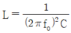
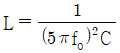
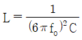
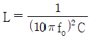
(정답률: 25%)
22. 다음 중 송전선로의 역섬락을 방지하기 위한 대책으로 가장 알맞은 방법은?
- 가공지선 설치
- 피뢰기 설치
- 매설지선 설치
- 소호각 설치
(정답률: 31%)
23. 증기 사이클에 대한 설명 중 틀린 것은?
- 랭킨사이클의 열효율은 초기 온도 및 초기 압력이 높을수록 효율이 크다.
- 재열사이클은 저압터빈에서 증기가 포화상태에 가까워졌을 때 증기를 다시 가열하여 고압터빈으로 보낸다.
- 재생사이클은 증기 원동기 내에서 증기의 팽창 도중에 증기를 추출하여 급수를 예열한다.
- 재열재생사이클은 재상사이클과 재열사이클을 조합하여 병용하는 방식이다.
(정답률: 17%)
24. 배전선로의 3상 3선식 비접지 방식을 채용할 경우 나타나는 현상은?
- 1선 지락 고장 시 고장 전류가 크다.
- 1선 지락 고장 시 인접 통신선의 유도장해가 크다.
- 고저압 혼촉고장 시 저압선의 전위상승이 크다.
- 1선 지락 고장 시 건전상의 대지 전위상승이 크다.
(정답률: 25%)
25. 파동임피던스 Z1 = 500Ω인 선로에 파동임피던스 Z2 = 1500Ω인 변압기가 접속되어 있다. 선로로부터 600kV의 전압파가 들어왔을 때, 접속점에서의 투과파 전압(kV)은?
- 300
- 600
- 900
- 1200
(정답률: 22%)
26. 전력원선도에서 구할 수 없는 것은?
- 송·수전할 수 있는 최대 전력
- 필요한 전력을 보내기 위한 송·수전단 전압간의 상차각
- 선로 손실과 송전 효율
- 과도극한전력
(정답률: 31%)
27. 송배전선로의 고장전류 계산에서 영상 임피던스가 필요한 경우는?
- 3상 단락 계산
- 선간 단락 계산
- 1선 지락 계산
- 3선 단선 계산
(정답률: 32%)
28. 송전전력, 송전거리, 전선로의 전력손실이 일정하고, 같은 재료의 전선을 사용한 경우 단상 2선식에 대한 3상 4선식의 1선당 전력비는 약 얼마인가? (단, 중성선은 외선과 같은 굵기이다.)
- 0.7
- 0.87
- 0.94
- 1.15
(정답률: 23%)
29. 66/22 kV, 2000 kVA 단상변압기 3대를 1뱅크로 운전하는 변전소로부터 전력을 공급받는 어떤 수전점에서의 3상단락전류는 약 몇 A 인가? (단, 변압기의 %리액턴스는 7 이고, 선로의 임피던스는 0 이다.)
- 750
- 1570
- 1900
- 2250
(정답률: 13%)
30. 3상용 차단기의 정격 차단용량은?
- √3 × 정격전압 × 정격차단전류
- √3 × 정격전압 × 정격전류
- 3 × 정격전압 × 정격차단전류
- 3 × 정격전압 × 정격전류
(정답률: 35%)
31. 다음 중 그 값이 항상 1 이상인 것은?
- 부등률
- 부하율
- 수용률
- 전압강하율
(정답률: 36%)
32. 선간전압이 V(kV)이고 3상 정격용량이 P(kVA)인 전력계통에서 리액턴스가 X(ohm)라고 할 때, 이 리액턴스를 %리액턴스로 나타내면?
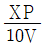
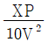
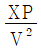
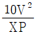
(정답률: 33%)
33. 전력계통을 연계시켜서 얻는 이득이 아닌 것은?
- 배후 전력이 커져서 단락용량이 작아진다.
- 부하 증가 시 종합첨두부하가 저감된다.
- 공급 예비력이 절감된다.
- 공급 신뢰도가 향상된다.
(정답률: 27%)
34. 한류리액터를 사용하는 가장 큰 목적은?
- 충전전류의 제한
- 접지전류의 제한
- 누설전류의 제한
- 단락전류의 제한
(정답률: 34%)
35. 전원이 양단에 있는 환성선로의 단락보호에 사용되는 계전기는?
- 방향거리 계전기
- 부족전압 계전기
- 선택접지 계전기
- 부족전류 계전기
(정답률: 30%)
36. 원자력발전소에서 비등수형 원자로에 대한 설명으로 틀린 것은?
- 연료로 농축 우라늄을 사용한다.
- 냉각재료 경수를 사용한다.
- 물을 원자로 내에서 직접 비등시킨다.
- 가압수형 원자로에 비해 노심의 출력밀도가 높다.
(정답률: 21%)
37. 개폐서지의 이상전압을 감쇄할 목적으로 설치하는 것은?
- 단로기
- 차단기
- 리액터
- 개폐저항기
(정답률: 33%)
38. 반지름 0.6cm인 경동선을 사용하는 3상 1회선 송전선에서 선간거리르 2m로 정삼각형 배치할 경우, 각 선의 인덕턴스(mH/km)는 약 얼마인가?
- 0.81
- 1.21
- 1.51
- 1.81
(정답률: 23%)
39. 수력발전소의 형식을 취수방법, 운용방법에 따라 분류할 수 있다. 다음 중 취수방법에 따른 분류가 아닌 것은?
- 댐식
- 수로식
- 조정지식
- 유역 변경식
(정답률: 23%)
40. 부하의 역률을 개선할 경우 배전선로에 대한 설명으로 틀린 것은? (단, 다른 조건을 동일하다.)
- 설비용량의 여유 증가
- 전압강하의 감소
- 선로전류의 증가
- 전력손실의 감소
(정답률: 27%)
3과목: 전기기기
41. 직류발전기를 병렬운전 할 때 균압모선이 필요한 직류기는?
- 직권발전기, 분권발전기
- 복권발전기, 직권발전기
- 복권발전기, 분권발전기
- 분권발전기, 단극발전기
(정답률: 25%)
42. 3상 분권 정류자전동기에 속하는 것은?
- 톰슨 전동기
- 데리 전동기
- 시라게 전동기
- 애트킨슨 전동기
(정답률: 27%)
43. 3상 유도전동기의 기계적 출력 P(kW), 회전수 N(rpm)인 전동기의 토크(N·m)는?
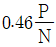
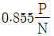
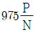
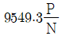
(정답률: 22%)
44. 단권변압기에서 1차 전압 100V, 2차 전압 110V인 단권변압기의 자기용량과 부하용량의 비는?
- 1/10
- 1/11
- 10
- 11
(정답률: 28%)
45. 전부하로 운전하고 있는 50Hz, 4극의 권선형 유도전동기가 있다. 전부하에서 속도를 1440 rpm에서 1000 rpm으로 변화시키자면 2차에 약 몇 Ω 의 저항을 넣어야 하는가? (단, 2차 저항은 0.02Ω 이다.)
- 0.147
- 0.18
- 0.02
- 0.024
(정답률: 17%)
46. 4극, 중권, 총 도체 수 500, 극당 자속이 0.01 Wb인 직류발전기가 100V의 기전력을 발생시키는데 필요한 회전수는 몇 rpm 인가?
- 800
- 1000
- 1200
- 1600
(정답률: 27%)
47. 취급이 간단하고 기동시간이 짧아서 섬과 같이 전력계통에서 고립된 지역, 선박 등에 사용되는 소용량 전원용 발전기는?
- 터빈 발전기
- 엔진 발전기
- 수차 발전기
- 초전도 발전기
(정답률: 25%)
48. 포화되지 않은 직류발전기의 회전수가 4배로 증가되었을 때 기전력을 전과 같은 값으로 하려면 자속을 속도 변화 전에 비해 얼마로 하여야 하는가?
- 1/2
- 1/3
- 1/4
- 1/8
(정답률: 30%)
49. 동기기의 안정도를 증진시키는 방법이 아닌 것은?
- 단락비를 크게 할 것
- 속응여자방식을 채용할 것
- 정상 리액턴스를 크게 할 것
- 영상 및 역상 임피던스를 크게 할 것
(정답률: 24%)
50. 동기발전기 단절권의 특징이 아닌 것은?
- 코일 간격이 극 간격보다 작다.
- 전절권에 비해 합성 유기 기전력이 증가한다.
- 전절권에 비해 코일 단이 짧게 되므로 재료가 절약된다.
- 고조파를 제거해서 절전권에 비해 기전력의 파형이 좋아진다.
(정답률: 22%)
51. 동기발전기의 단자부근에서 단락 시 단락전류는?
- 서서히 증가하여 큰 전류가 흐른다.
- 처음부터 일정한 큰 전류가 흐른다.
- 무시할 정도의 작은 전류가 흐른다.
- 단락된 순간은 크나, 점차 감소한다.
(정답률: 31%)
52. 평상 6상 반파정류회로에서 297V의 직류전압을 얻기 위한 입력측 각 상전압은 약 몇 V 인가? (단, 부하는 순수 저항부하이다.)
- 110
- 220
- 380
- 440
(정답률: 16%)
53. 권선형 유도전동기 2대를 직렬종속으로 운전하는 경우 그 동기속도는 어떤 전동기의 속도와 같은가?
- 두 전동기 중 적은 극수를 갖는 전동기
- 두 전동기 중 많은 극수를 갖는 전동기
- 두 전동기의 극수의 합과 같은 극수를 갖는 전동기
- 두 전동기의 극수의 합의 평균과 같은 극수를 갖는 전동기
(정답률: 27%)
54. GTO 사이리스터의 특징으로 틀린 것은?
- 각 단자의 명칭은 SCR 사이리스터와 같다.
- 온(On) 상태에서는 양방향 전류특성을 보인다.
- 온(On) 드롭(Dro)은 약 2~4V가 되어 SCR 사이리스터 보다 약간 크다.
- 오프(Off) 상태에서는 SCR 사이리스터처럼 양방향 전압저지능력을 갖고 있다.
(정답률: 15%)
55. 직류기의 권선을 단중 파권으로 감으면 어떻게 되는가?
- 저압 대전류용 권선이다.
- 균압환을 연결해야 한다.
- 내부 병렬 회로수가 극수만큼 생긴다.
- 전기자 병렬 회로수가 극수에 관계없이 언제나 2 이다.
(정답률: 30%)
56. 210/1⑤V의 변압기를 그림과 같이 결선하고 고압측에 200V의 전압을 가하면 전압계의 지시는 몇 V 인가? (단, 변압기는 가극성이다.)
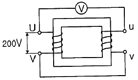
- 100
- 200
- 300
- 400
(정답률: 18%)
57. 단면적 10cm2 인 철심에 200회의 권선을 감고, 이 권선에 60Hz, 60V인 교류전압을 인가하였을 때, 철심의 최대자속밀도는 약 몇 Wb/m2 인가?
- 1.126 × 10-3
- 1.126
- 2.252 × 10-3
- 2.252
(정답률: 18%)
58. 2상 교류 서보모터를 구동하는데 필요한 2상전압을 얻는 방법으로 널리 쓰이는 방법은?
- 2상 전원을 직접 이용하는 방법
- 환상 결선 변압기를 이용하는 방법
- 여자권선에 리액터를 삽입하는 방법
- 증폭기 내에서 위상을 조정하는 방법
(정답률: 16%)
59. 3상 변압기의 병렬운전 조건으로 틀린 것은?
- 각 군의 임피던스가 용량에 비례할 것
- 각 변압기의 백분율 임피던스 강하가 같을 것
- 각 변압기의 권수비가 같고 1차와 2차의 정격전압이 같을 것
- 각 변압기의 상회전 방향 및 1차와 2차 선간전압의 위상 변위가 같을 것
(정답률: 23%)
60. 전력의 일부를 전원측에 반환할 수 있는 유도전동기의 속도제어법은?
- 극수 변환법
- 크레머 방식
- 2차 저항 가감법
- 세르비우스 방식
(정답률: 17%)
4과목: 회로이론 및 제어공학
61. RL 직렬회로에 순시치 전압 v(t) = 20 + 100sinωt + 40sin(3ωt+60°) + 40sin5ωt(V)를 가할 때 제5고조파 전류의 실효값 크기는 약 몇 A 인가? (단, R = 4Ω, ωL = 1Ω 이다.)
- 4.4
- 5.66
- 6.25
- 8.0
(정답률: 18%)
62. 회로의 단자 a와 b 사이에 나타나는 전압 Vab는 몇 V 인가?
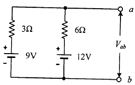
- 3
- 9
- 10
- 12
(정답률: 24%)
63. 그림과 같은 회로의 구동점 임피던스(Ω)는?
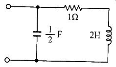
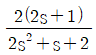
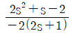
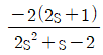
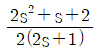
(정답률: 25%)
64. 대칭 3상 전압이 공급되는 3상 유도전동기에서 각 계기의 지시는 다음과 같다. 유도전동기의 역률은 약 얼마인가?
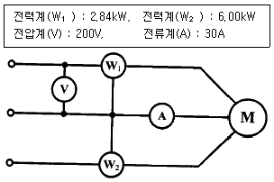
- 0.70
- 0.75
- 0.80
- 0.85
(정답률: 25%)
65. △결선으로 운전 중인 3상 변압기에서 하나의 변압기 고장에 의해 V결선으로 운전하는 경우, V결선으로 공급할 수 있는 전력은 고장 전 △결선으로 공급할 수 있는 전력에 비해 약 몇 % 인가?
- 86.6
- 75.0
- 66.7
- 57.7
(정답률: 28%)
66. 그림의 교류 브리지 회로가 평형이 되는 조건은?
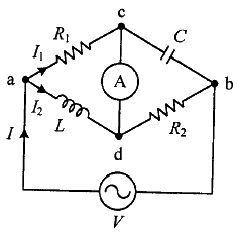
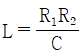
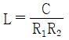
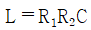
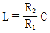
(정답률: 21%)
67. 불평형 3상 전류 Ia = 25+j4(A), Ib = -18-j16(A), Ic = 7+j15(A) 일 때 영상전류 I0(A)는?
- 2.67 + j
- 2.67 + j2
- 4.67 + j
- 4.67 + j2
(정답률: 27%)
68. f(t) = tn의 라플라스 변환 식은?
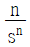
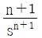
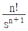
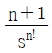
(정답률: 29%)
69. 4단자 정수 A, B, C, D 중에서 전압이득의 차원을 가진 정수는?
- A
- B
- C
- D
(정답률: 28%)
70. 분포정수회로에서 직렬 임피던스를 Z, 병렬어드미턴스를 Y라 할 때, 선로의 특성임피던스 Zc는?
- ZY
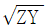
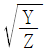
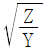
(정답률: 29%)
71. e(t)의 z변환을 E(z)라고 했을 때 e(t)의 초기값 e(0)는?
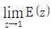
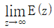
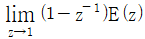
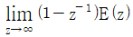
(정답률: 18%)
72. 폐루프 시스템에서 응답의 잔류 편차 또는 정상상태오차를 제거하기 위한 제어 기법은?
- 비례 제어
- 적분 제어
- 미분 제어
- on-off 제어
(정답률: 21%)
73. 근궤적의 성질 중 틀린 것은?
- 근구적은 실수축을 기준으로 대칭이다.
- 점근선은 허수축 상에서 교차한다.
- 근궤적의 가지 수는 특성방정식의 차수와 같다.
- 근궤적은 개루프 전달함수의 극점으로부터 출발한다.
(정답률: 21%)
74. Routh-Hurwitz 안정도 판별법을 이용하여 특성방정식이 s3 + 3s2 + 3s + 1 + K = 0 으로 주어진 제어시스템이 안정하기 위한 K의 범위를 구하면?
- -1 ≤ K ＜ 8
- -1 ＜ K ≤ 8
- -1 ＜ K ＜ 8
- K ＜ -1 또는 K ＞ 8
(정답률: 29%)
75. 그림의 신호 흐름 선도에서 C(s)/R(s)는?
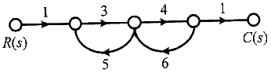
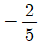
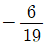
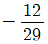
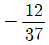
(정답률: 28%)
76. 그림과 같은 블록선도의 제어시스템에서 속도 편차 상수 Kv는 얼마인가?
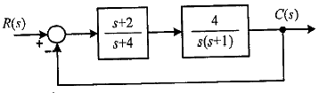
- 0
- 0.5
- 2
- ∞
(정답률: 15%)
77. 시스템행렬 A가 다음과 같을 때 상태천이행렬을 구하면?
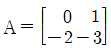
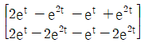
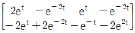
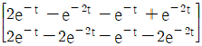
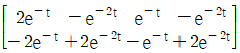
(정답률: 15%)
78. 다음 논리식을 간단히 한 것은?
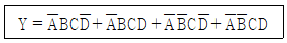
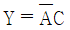
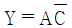
- Y = AB
- Y = BC
(정답률: 30%)
79. 전달함수가 으로 표현되는 제어시스템에서 직류 이득은 얼마인가?
- 1
- 2
- 3
- 5
(정답률: 28%)
80. 전달함수가 인 2차 제어시스템의 감쇠 진동 주파수(ωd)는 몇 rad/sec 인가?
- 3
- 4
- 5
- 6
(정답률: 12%)
5과목: 전기설비기술기준 및 판단기준
81. 버스 덕트 공사에 의한 저압 옥내배선 시설공사에 대한 설명으로 틀린 것은?
- 덕트(환기형의 것을 제외)의 끝부분은 막지말 것
- 사용전압이 400V 미만인 경우에는 덕트에 제3종 접지공사를 할 것
- 덕트(환기형의 것을 제외)의 내부에 먼지가 침입하지 아니하도록 할 것
- 사람이 접촉할 우려가 있고, 사용전압이 400V 이상인 경우에는 덕트에 특별 제3종 접지공사를 할 것
(정답률: 26%)
82. 다음 ( ) 에 들어갈 내용으로 옳은 것은?
- 전파
- 혼촉
- 단락
- 정전기
(정답률: 27%)
83. 고압 가공전선로에 사용하는 가공지선은 지름 몇 mm 이상의 나경동선을 사용하여야 하는가?
- 2.6
- 3.0
- 4.0
- 5.0
(정답률: 26%)
84. 금속제 외함을 가진 저압의 기계기구로서 사람이 쉽게 접촉될 우려가 있는 곳에 시설하는 경우 전기를 공급받는 전로에 지락이 생겼을 때 자동적으로 전로를 차단하는 장치를 설치하여야 하는 기계기구의 사용전압이 몇 V를 초과하는 경우인가?
- 30
- 50
- 100
- 150
(정답률: 13%)
85. 사람이 상시 통행하는 터널 안의 배선(전기기계기구 안의 배선, 관등회로의 배선, 소세력 회로의 전선 및 출퇴 표시등 회로의 전선은 제외)의 시설기준에 적합하지 않은 것은? (단, 사용전압이 저압의 것에 한한다.)
- 합성수지관 공사로 시설하였다.
- 공칭단면적 2.5mm2 의 연동선을 사용하였다.
- 애자사용공사 시 전선의 높이는 노면상 2m로 시설하였다.
- 전로에는 터널의 입구 가까운 곳에 전용개폐기를 시설하였다.
(정답률: 21%)
86. 과전류차단기로 시설하는 퓨즈 중 고압전로에 사용하는 비포장 퓨즈는 정격전류 2배 전류 시 몇 분안에 용단되어야 하는가?
- 1분
- 2분
- 5분
- 10분
(정답률: 21%)
87. 옥내에 시설하는 저압전선에 나전선을 사용할 수 있는 경우는?
- 버스덕트 공사에 의하여 시설하는 경우
- 금속덕트 공사에 의하여 시설하는 경우
- 합성수지관 공사에 의하여 시설하는 경우
- 후강전선관 공사에 의하여 시설하는 경우
(정답률: 23%)
88. 제2종 특고압 보안공사 시 지지물로 사용하는 철탑의 경간을 400m 초과로 하려면 몇 mm2 이상의 경동연선을 사용하여야 하는가?(2021년 개정된 KEC 규정 적용됨)
- 38
- 55
- 82
- 95
(정답률: 15%)
89. 케이블 트레이공사에 사용하는 케이블 트레이에 대한 기준으로 틀린 것은?
- 안전율은 1.5 이상으로 하여야 한다.
- 비금속제 케이블 트레이는 수밀성 재료의 것이어야 한다.
- 금속제 케이블 트레이 계통은 기계적 및 전기적으로 완전하게 접속하여야 한다.
- 저압 옥내배선의 사용전압이 400V 이상인 경우에는 금속제 트레이에 특별 제3종 접지공사를 하여야 한다.
(정답률: 19%)
90. 지중전선로에 사용하는 지중함의 시설기준으로 틀린 것은?
- 지중함은 견고하고 차량 기타 중량물의 압력에 견디는 구조일 것
- 지중함은 그 안의 고인 물을 제거할 수 있는 구조로 되어있을 것
- 지중함의 뚜껑은 시설자 이외의 자가 쉽게 열 수 없도록 시설할 것
- 폭발성의 가수가 침입할 우려가 있는것에 시설하는 지우함으로서 그 크기가 0.5m3 이상인 것에는 통풍장치 기타 가스를 방산시키기 위한 적당한 장치를 시설할 것
(정답률: 32%)
91. 그림은 전력선 반송통신용 결합장치의 보안장치이다. 여기에서 CC는 어떤 커패시터인가?
- 결합 커패시터
- 전력용 커패시터
- 정류용 커패시터
- 축전용 커패시터
(정답률: 26%)
92. 가공전선로의 지지물에 하중이 가하여지는 경우에 그 하중을 받는 지지물의 기초 안전율은 얼마 이상이어야 하는가? (단, 이상 시 상정하중은 무관)
- 1.5
- 2.0
- 2.5
- 3.0
(정답률: 25%)
93. 교량의 윗면에 시설하는 고압 전선로는 전선의 높이를 교량의 노면상 몇 m 이상으로 하여야 하는가?
- 3
- 4
- 5
- 6
(정답률: 16%)
94. 발전소에서 계측하는 장치를 시설하여야 하는 사항에 해당하지 않는 것은?
- 특고압용 변압기의 온도
- 발전기의 회전수 및 주파수
- 발전기의 전압 및 전류 또는 전력
- 발전기의 베어링(수중 메탈을 제외한다) 및 고정자의 온도
(정답률: 21%)
95. 수소냉각식 발전기 및 이에 부속하는 수소냉각장치의 시설에 대한 설명으로 틀린 것은?
- 발전기안의 수소의 밀도를 계측하는 장치를 시설할 것
- 발전기안의 수소의 순도가 85% 이하로 저하한 경우에 이를 경보하는 장치를 시설할 것
- 발전기안의 수소의 압력을 계측하는 장치 및 그 압력이 현저히 변동한 경우에 이를 경보하는 장치를 시설할 것
- 발전기는 기밀구조의 것이고 또한 수소가 대기압에서 폭발하는 경우에 생기는 압력에 견디는 강도를 가지는 것일 것
(정답률: 21%)
96. 사용전압이 35000V 이하인 특고압 가공전선과 가공약전류 전선을 동일 지지물에 시설하는 경우, 특고압 가공전선로의 보안공사로 적합한 것은?
- 고압 보안공사
- 제1종 특고압 보안공사
- 제2종 특고압 보안공사
- 제3종 특고압 보안공사
(정답률: 21%)
97. 목장에서 가축의 탈출을 방지하기 위하여 전기울타리를 시설하는 경우 전선은 인장강도가 몇 kN 이상의 것이어야 하는가?
- 1.38
- 2.78
- 4.43
- 5.93
(정답률: 22%)
98. 사용전압이 특고압인 전기집진장치에 전원을 공급하기 위해 케이블을 사람이 접촉할 우려가 없도록 시설하는 경우 방식 케이블 이외의 케이블의 피복에 사용하는 금속체에는 몇 종 접지공사로 할 수 있는가?(관련 규정 개정전 문제로 여기서는 기존 정답인 3번을 누르면 정답 처리됩니다. 자세한 내용은 해설을 참고하세요.)
- 제1종 접지공사
- 제2종 접지공사
- 제3종 접지공사
- 특별 제3종 접지공사
(정답률: 20%)
99. 저압의 전선로 중 절연부분의 전선과 대지간의 절연저항은 사용전압에 대한 누설전류가 최대 공급전류의 얼마를 넘지 않도록 유지하여야 하는가?
- 1/1000
- 1/2000
- 1/3000
- 1/4000
(정답률: 25%)
100. 최대사용전압이 7kV를 초과하는 회전기의 절연내력 시험은 최대사용전압의 몇 배의 전압(1⑤00V 미만으로 되는 경우에는 1⑤00V)에서 10분간 견디어야 하는가?
- 0.92
- 1
- 1.1
- 1.25
(정답률: 24%)